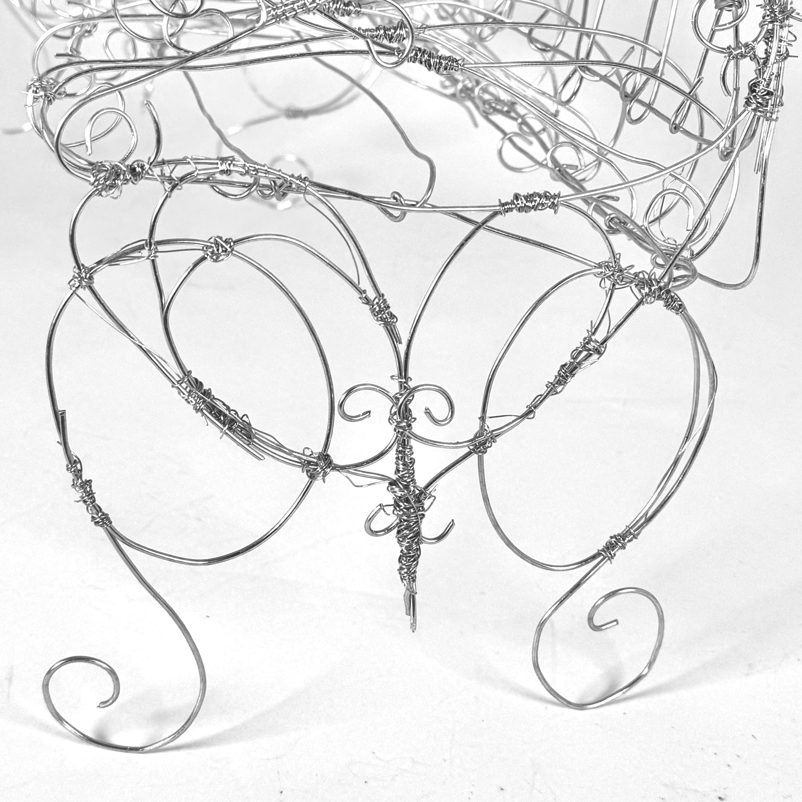
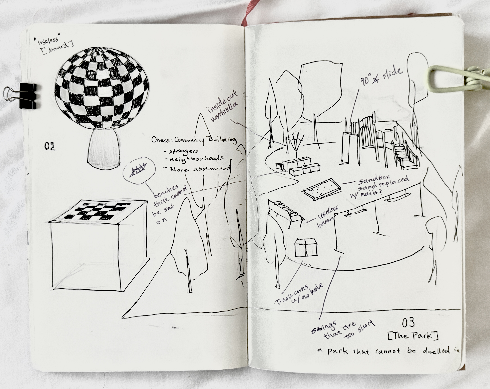
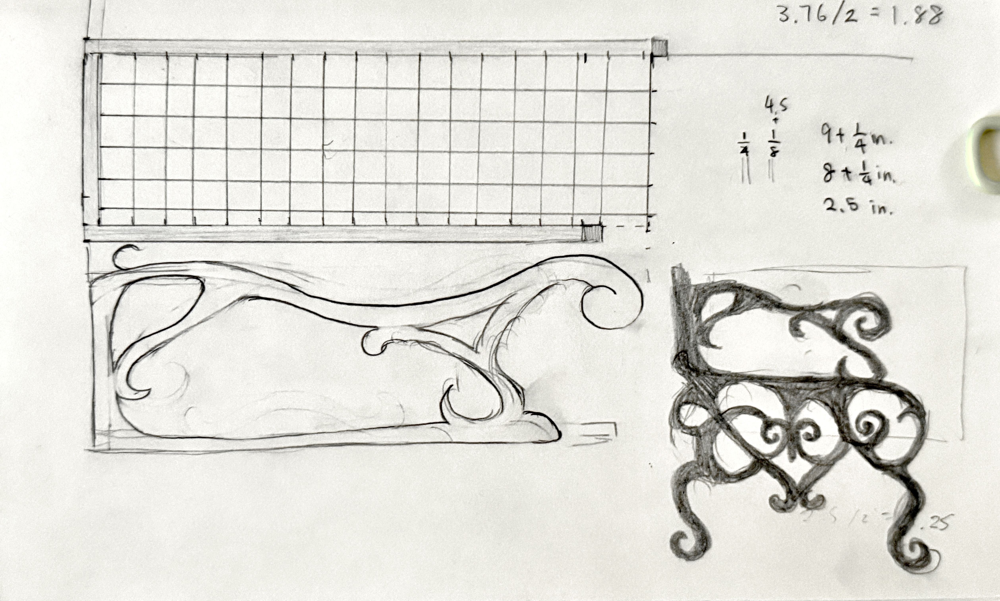

Bench
BackWrite your Bench project blurb here. You can describe the prompt, materials, constraints, and what you were testing with form or usability.


Ideations
Add a short ideations blurb here — what you explored, how iterations evolved, and what changed between drafts.




